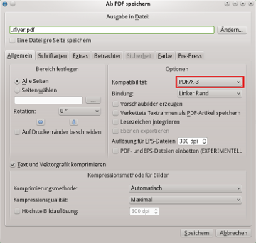
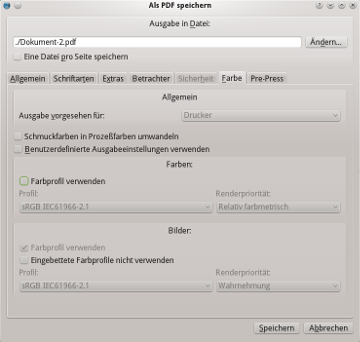
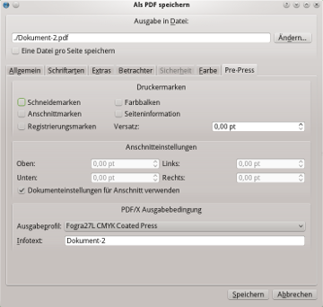

Die Unterstützung des PDF/X-3-Formats ist ein Meilenstein in der Entwicklung von Scribus. Scribus war die erste DTP-Anwendung, die den anspruchsvollen, aber offenen ISO-Standard 15930-3:2002 unterstützt hat. Diese Art der PDF-Erstellung war bis dahin nur in teuren kommerziellen Anwendungen verfügbar. Das Erzeugen von "druckfertigen" PDFs war lange Zeit äußerst fehlerbeladen, vor allem, wenn Anwender nicht mit den Feinheiten von PostScript, dem "Destillieren" von PDFs und den verschiedenen Möglichkeiten der Plattenbelichter vertraut waren. Das Sprüchlein "Es ist schwer, eine gute PDF-Datei herzustellen, aber leicht, eine zu vermurksen" enthält jede Menge Wahrheit. Mit der allgemeinen Verbreitung der Acrobat-Distiller-Produktfamilie zur PDF-Erzeugung bedurfte es der Kenntnis von fast 100 Distiller-Parametern.
In europäischen Ländern ist das PDF/X-Konzept weiter verbreitet als in Nordamerika. Viel Unterstützung erfuhren diese Standards aus Deutschland und deutschen Pre-Press-Firmen, die weltweit führend bei Druckmaschinen digitalen Belichtungstechnologien sind.
Das Erzeugen von PDF/X-Dateien, für die es derzeit drei ISO-Standards gibt, ist teilweise ein Versuch, Endanwendern und Autoren einen herstellerneutralen Maßstab zu liefern, mit dessen Hilfe sie entscheiden können, ob Dateien für den professionellen Druck oder den Austausch mit einem Servicebüro geeignet sind. Scribus bietet leichtverständliche und einfach zu benutzende Optionen, die es Anwendern ermöglichen, 100%ig standardkonforme Dateien zu erzeugen. Beachten Sie wie immer, daß Ihre Druckerei oder der Plattenbelichtungs-Workflow auch in der Lage sein muß, diese Dateien zu verarbeiten. Nicht alle können mit der neuesten PDF-Technologie umgehen. Die neuesten Belichtungsworkflows von Prinergy und Harlequin unterstützen PDF/X-3.
Warnung: Alle Bilder sollten im RGB-Farbraum, nicht in CMYK vorliegen, bevor sie in Scribus importiert werden. Ansonsten könnten sich unerwünschte Farbverschiebungen ergeben.
Wählen Sie im PDF-Dialog in der Kompatibilitätsliste PDF/X-3. Damit ändern sich die Voreinstellungen automatisch.
|  |
Als nächstes wechseln Sie in den Reiter Farbe, wie unten gezeigt:
|  |
Hier wählen Sie die Farbprofile aus, die in die PDF-Datei eingebettet werden. Wenn Sie kein Profil für Füllfarben auswählen, wird automatisch CMYK als Farbraum zugewiesen.
Dann wechseln Sie in den PDF/X-3-Reiter:
|  |
Hier können Sie sowohl die Trim-Box als auch die PDF-Ausgabebedingung einstellen, die vom ICC-Profil des Druckers festgelegt wird. Dies ist vermutlich die wichtigste Entscheidung, was Farbprofile angeht, denn sie betrifft alle Farben im Dokument. Sie können auch eine Bemerkung über das Dokument einfügen, was später unter Umständen nützlich sein kann. Dieses Feld sollte nicht leer bleiben, weil die Datei dann nicht dem PDF/X-3-Standard entspricht.
Beachten Sie: Wegen der äußerst anspruchsvollen Bedingungen des PDF/X-3-Standards werden einige PDF-Funktionen deaktiviert. Dazu gehören Verschlüsselung, Präsentationseffekte, Anmerkungen und Transparenz. Schriften werden automatisch eingebettet. Sie sollten die Hinweise zu den PDF-Exportoptionen für die Vorbereitung von Dateien und die Auswahl des richtigen Bildformats beachten.
Wenn Sie eine sehr genaue Farbreproduktion benötigen und Ihre Druckerei PDF/X-3 akzeptiert. Ohne PDF/X-3-Unterstützung Ihrer Druckerei sind unschöne Farbabweichungen wahrscheinlicher als beim traditionellen PDF-Export.
Ja. Das PDF/X-3-Format wurde geschaffen, um einen Workflow zu ermöglichen, der vollständig auf Farbmanagement basiert, ohne daß man etwas über die Details der tatsächlich verwendeten Drucktechnologien wissen muß.
Kurz gesagt, PDF/X-1a stellt folgende Anforderungen: Der Farbraum muß CMYK oder Graustufen sein, alle Schriften müssen eingebettet werden, und die PDF enthält Informationen darüber, ob Überfüllungen vorgenommen wurden oder nicht. Stellen Sie sich das wie eine Übergabe mit geschlossenen Augen vor, denn es gibt keine Sicherheit, wie das Ergebnis aussieht.
PDF/X-2 ist ein wenig strenger Standard, dafür ist mehr Kommunikation zwischen dem Erzeuger und dem Empfänger nötig. Schriften müssen nicht eingebettet werden, und es ist möglich OPI (Open Press Initiative) einzusetzen. PDF/X-2 erlaubt außerdem die Verwendung von geräteunabhängigen Farbräumen wie CIE L*a*b.
PDF/X-3 ermöglicht das Einbetten von ICC-Farbprofilen ebenso wie verschiedene Ausgabeprioritäten und den "DeviceN"-Farbraum (Schmuckfarben), der jetzt auch von Ghostscript unterstütz wird. Auch das Überdrucken von Farben ist möglich.
http://www.ddap.org/resource_center/article_index.php
http://www.ipa.org/PDFS/pdfxguide.zip
http://www.pdf-x.com/downloads/pdf/application_notes_pdfx3.pdf